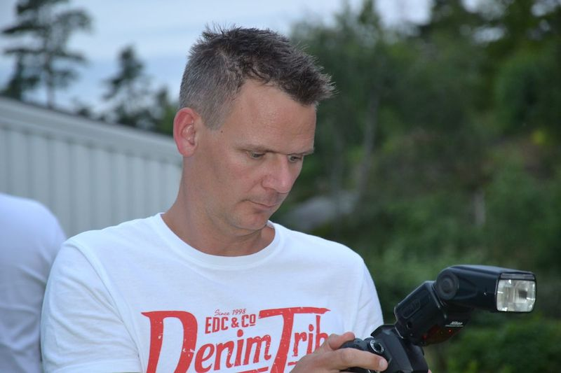

About Kaj
Born in 1973 in the province Drenthe (which is the nicest province in the Netherlands). I still life here, you can say that I'm pretty homebased but I really like to travel in- and outside the Netherlands. In the Netherlands I like to travel by train to the big cities Amsterdam, Utrecht en Groningen.
Beside my family are the internet, football, mountainbiking, photography (of beautiful things and extreme sports) and reading my passions.
Until 2013 I was a teacher in Special Needs Education, working with children with autism, pdd-nos, asperger, behavioral problems. That year I told my boss I would be looking for a new job. I wanted to do something I really wanted. So with his help I had job counseling and choose to become a Front-end developer.
I studied a lot, worked hard and since april 2014 I'm a front-end developer. I promised myself that I will keep learning and getting better at this to get in the group of people who are the best front-end devs in the Netherlands.
Important things I learned are: "One is never to old to change jobs and learn something new" and "If you know wath you want, you can get there".
Other people say about me:
Kaj voelt goed aan dat om online beter te worden, je de gebruiker centraal moet stellen. Zijn focus op wat een gebruiker kan, en daarbij nimmer het doel van de organisatie uit het oog verliezend, is onmisbaar voor iedere organisatie om het online spel beter te gaan spelen. Hij heeft een mooie combinatie van goede front-end én interaction design kennis, doe daar je voordeel mee! Eddy Boeve, trainer interaction design bij LECTRIC.
The great enthusiasm you show, is of great value. Please don't lose it. Do not lose your countless energy to dive into a subject and gather opinions from everyone who want to share their bit of enthusiasm.
One thing you also do into a great account, is giving back to other, new front-end web developers. The writings on Twitter about your findings, and longer articles on your blog when it gets a bit more complicated for one hundred forty characters, both are valuable for at least one person.
You got another thing right, and that is the willpower to go out of the daily routine of working and living." Arjan Eising, webdeveloper and trainer jQuery Inception.
Kaj heeft bij SiteGeregeld vlieguren gemaakt als Front-end Developer, en met verve. Onder andere door zijn gestructureerde manier van werken is hij een toevoeging voor het ontwikkel-team! Bas van der Lans, co-founder Van Ons en directeur SiteGeregeld
Qualities
- Social
- Critical
- Enthousiastic
- Energetic
- Eager to learn
- Coach
Front-end working Experience
- Apr. 2014 until now: CSS developer at Zorgweb.
- Dec. 2013 until Feb. 2014: Trainee Front-end developer At SiteGeregeld.
- May 2013 until Oct. 2013: Trainee Front-end developer at Pop a Question.
- 2008 until 2014: Independent WordPress advisor, beside my job as special needs teacher
CSS and/or HTML development
- Our company website: Zorgweb.nl
- devoorzieningenwijzer.nl
Writings elsewhere
- CSS Resets - Fronteers website
Organised
- WordPress Meetup: Amersfoort 2010 en 2011, Deventer 2010, Groningen 2011, Zwolle 2012 en 2014.
- Wordcamp Netherlands: 2009 en 2010
Presentations
- WordPress and Education
- ICT and Special Needs Education
Voluntary work
- Webmaster - football club Alcides
- Coach of youth teams at Alcides football club Alcides